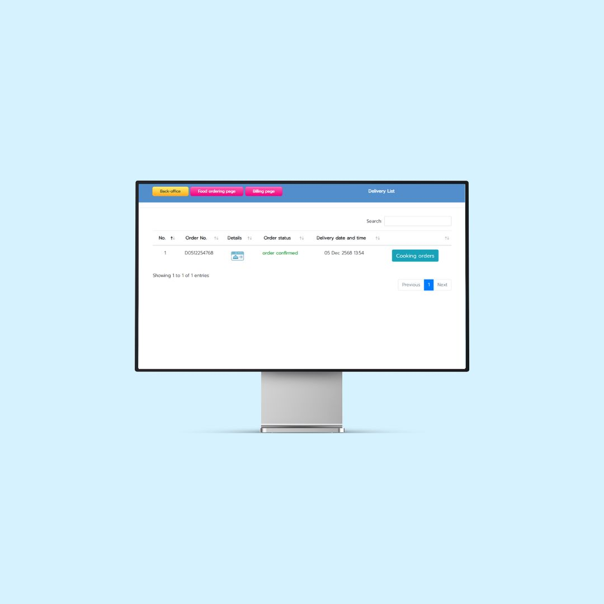

เว็บแอปพลิเคชันสั่งอาหารและจัดส่ง เชื่อมต่อระบบ POS
พัฒนาเมื่อ - 2025เว็บแอปพลิเคชันสำหรับสั่งอาหารและจัดส่งที่ส่งข้อมูลคำสั่งซื้อไปยัง POS ของร้านอาหารโดยตรง ลูกค้าสามารถเลือกเมนู ปรับแต่งรายการอาหาร สั่งซื้อ และชำระเงินออนไลน์ได้ เมื่อได้รับคำสั่งซื้อ พนักงานตรวจสอบและเปลี่ยนสถานะผ่าน POS ช่วยให้การจัดการภายในร้านเป็นระบบ รองรับขั้นตอนการเตรียมอาหารในครัวและระบบคิดเงินที่มีอยู่
ฟังก์ชันของระบบ
- จัดการเมนูและตัวเลือกปรับแต่งรายการอาหารสำหรับลูกค้า
- ระบบสั่งซื้อออนไลน์และประมวลผลการชำระเงินอย่างปลอดภัย
- พนักงานตรวจสอบและอัปเดตสถานะคำสั่งซื้อผ่าน POS
- ซิงก์ข้อมูลคำสั่งซื้อกับ POS แบบเรียลไทม์
- รองรับขั้นตอนการเตรียมและติดตามรายการอาหารในครัว
- ออกบิลและใบเสร็จผ่าน POS ที่มีอยู่
- ประวัติคำสั่งซื้อและข้อมูลวิเคราะห์ผลการดำเนินงาน
- หน้าจอ Responsive รองรับมือถือเพื่อความสะดวกของลูกค้า
เทคโนโลยีที่ใช้
- Frontend: HTML, CSS, JavaScript, jQuery, Bootstrap
- Backend: PHP, AJAX, JSON
- ฐานข้อมูล: MySQL / MySQLi
บทบาทและความรับผิดชอบ
- ออกแบบเว็บแอปพลิเคชันและโครงสร้างฐานข้อมูล
- พัฒนาทั้ง Frontend และ Backend
- เชื่อมต่อเว็บแอปกับ POS เดิมของร้านอาหาร
- ออกแบบและสนับสนุนการใช้งานบนมือถือ
- พัฒนาขั้นตอนจัดการคำสั่งซื้อแบบเรียลไทม์
